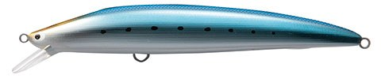
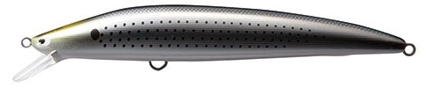
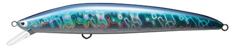
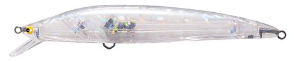
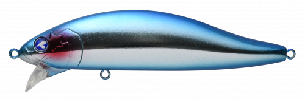

K2F162 T:3
（K-TEN SECOND GENERATION K2F162 T:3）
K2F162 T:3は、タックルハウスの「K-TEN セカンドジェネレーション」K2Fシリーズの、青物ゲーム向けフローティングミノーです。2016年に登場しました。
大物に必要な強さを持ちながら、重さを45gにおさえて、不自然な着水音や動きで魚に警戒させにくいのが最大の特徴。磁着タングステンが自由に動く「K-TENシステム2.0」と、ウェイトが円を描くように動く「R-Unit 2.0」で、どのスピードでも生命感のある泳ぎを出します。

画像出典:タックルハウス公式HP
スペック
- メーカー
- TACKLE HOUSE（タックルハウス）
- シリーズ
- K-TEN SECOND GENERATION（K2F）
- タイプ
- フローティングミノー
- 全長
- 162mm
- 重さ
- 45g
- フック
- ST-56 #1/0
- リング
- H#7
- ターゲット
- 青物（ヒラマサ・ブリなど）
- 価格
- 3,300円（メーカー表記）
- 発売
- 2016年
▼今すぐチェック

K2F162 T:3の特徴
大物に必要な強さと、プレッシャーをかけない「軽さ」
-
K-TENシステム2.0（磁着タングステン）
磁石でくっつくタングステン球が、ピックアップ・キャスト・リトリーブのそれぞれで最適な位置に動く。完全に固定されないことで、ボディに生命感が出る。
-
R-Unit 2.0のアクション
いろいろな重さのウェイトを円運動させて、新しいアクションを生み出す。海水のわずかな揺れにも反応して、遅く巻いても速く巻いても魚を誘える。
-
大物に耐える作り
3Dレーザーカットの貫通ワイヤー、ST-56 #1/0のフック、H#7のリングで、青物の強い引きにも負けない。
K2F162 T:3の使い方
基本はただ巻きです。潮目やサラシの周りを、まずはゆっくり一定のスピードで通して、反応がなければスピードを上げると、どのスピードでも泳ぎが破綻しにくいK2Fの強みを生かせます。
ロッドをあおってジャークを入れると、ふらつきながら泳ぐ動きでスイッチを入れられます。着水音がおとなしいので、魚が近くにいるナブラの周りにも投げやすいです。
K2F162 T:3の得意な状況
磯やサーフからのヒラマサ・ブリなど、青物を狙う時に出番です。
大きいミノーなのに、着水や泳ぎで魚を驚かせにくいのが強み。スレたナブラや、プレッシャーの高い場所でも口を使わせやすい1本です。
ワンポイント
同じK2F162には、重さを43gにしてフックとリングを細くした「SEABASS（シーバス）」もあります。シーバスロッドで大型シーバスを狙う時はSEABASS、青物ロッドでヒラマサやブリを狙う時はT:3と、タックルに合わせて選びましょう。
K2Fシリーズの使い分け
| モデル | 全長／ |
フック | こんな |
|---|---|---|---|
| K2F162 T:3 | 162mm／ |
ST-56 #1/0 | 青物ゲームに。 |
| K2F162 T:3 SEABASS | 162mm／ |
ST-56 #1 | シーバスタックルで |
| K2F142 T:1 | 142mm／ |
STX-58 #2 | リトリーブ抵抗が |
| K2F142 T:2 | 142mm／ |
STX-58 #2 | リトリーブ抵抗を |
| K2F142WL T:2.2 | 142mm／ |
STX-58 #2 | K2Fで |
| K2F122 T:1 | 122mm／ |
ST-46 #2 | ベイトが |
スペックはタックルハウス公式HPの記載より。ほかに、スローシンキングのK2S122 T:1や、河川向けのK2F122MS T:0.8もあります。
人気カラー
K2F162 T:3の人気カラーを紹介します。

B101 イワシイワシがベイトの時の基本カラー。澄み潮に。

B103 コノシロコノシロなど大きいベイトの時に。

B107 トビウオトビウオを追う青物を狙う時に。

B110 クリアHG透けるボディにホロのフラッシング。澄み潮でスレた時に。
※全10色（ほかに限定カラーもあります）。
画像出典:タックルハウス公式HP
▼今すぐチェック
K2F162 T:3に似ているルアー
-
 ボアーSS170
マリア
詳細はこちら＞
ボアーSS170
マリア
詳細はこちら＞
ロックショアの青物専用ジャークベイト。より重いルアーで攻めたい時に。
-

ゼッパー140F ブルーブルー 詳細はこちら＞140mmのビッグミノー。少し小さいシルエットで比べたい時に。
-
 アスリート16FVG
ジャクソン
詳細はこちら＞
アスリート16FVG
ジャクソン
詳細はこちら＞
160mmのフローティングミノー。サーフから大物を狙うなら。